翻墙手册v2.0
这个手册有些老了，部分内容过时了，不过很多内容还可参考。用海外信箱给：freeman105@gmail.com 发电子邮件（标题不可空白），10分钟内会拿到最新网址，突破网络封锁，翻墙看禁闻。
目录
软件简介
“自由门(freegate)”是动态网的客户端软件，使用巧妙方法找到动态网的节点。
使用要点一:如何下载自由门软件
1、 用海外邮箱获取下载地址
这是通用办法，适合暂时无法翻墙或者手里没有任何翻墙软件的P民；海外邮箱指国外或港台邮箱，不要用国内邮箱；推荐Gmail、Hotmail、Outlook等常用邮箱，申请方法见本书《Gmail邮箱申请教程》。
使用海外信箱寄一封信(主题不可空白)，到以下邮址约十分钟就可以收到下载点
freeget.one@gmail.com
收到回复并打开邮件，可见自由门最新版的下载地址：
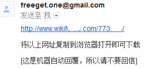
点开链接后，点击图示位置，即可下载最新版的自由门；这个链接有时效性；
2、全球自由网盟论坛
翻墙访问：http://forums.internetfreedom.org/
其实这里也可以下载其它各种翻墙软件,如同样大名鼎鼎的无界、花园等，以及各种手机版本的翻墙软件，了解种翻墙方法，有问题也可以在这里反馈。限于篇幅，只附一小部份截图如下：
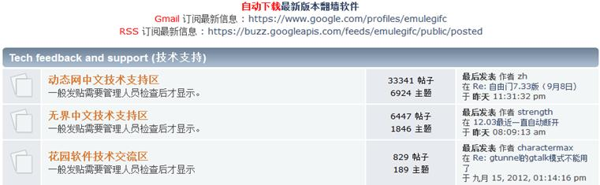
动态网中文技术支持区可以下自由门系列软件的最新版本及各种手机版本、插件等等：

3、动态网主页
翻墙访问：www.dongtaiwang.com主页，页面上方就可以见到软件下载链接，直接点击下载即可，勿需多言。
要点二、验证软件安全性
实际上,很多人可以从其它各种渠道下载自由门，那么使用前必须要验证软件的数字签名。数字签名是一种身份认证技术，存在于签名的软件中，被破坏后是无法恢复的。所以验证数字签名可以查询软件是否被篡改，保证使用者自身的安全。
验证方法：在自由门软件图标上点右键，在弹出菜单中选择属性，属性页面中依次选择数字签名→→签名列表→→详细信息→→查看证书→→详细信息→→指纹
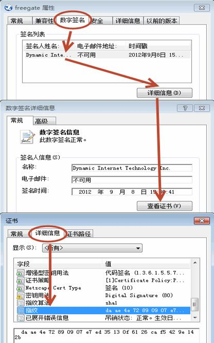
指纹的值一定是：da ae 4e 72 89 09 07 e7 ed 35 13 0f 61 26 ca f5 42 9e 14 2b
2010年8月1日前自由门软件数字签名：03 29 a2 0b fc 93 62 74 95 72 e8 33 34 37 60 f0 ae c2 ef 64
警告：如果"数字签名"页不存在，或签发者不是 "Dynamic Internet Technology Inc."，或签名失效，说明此文件已被修改或属假冒。那必然不是原版的自由门，绝对不能使用。
数字签名验证通过以后，如果杀软等仍然误报为病毒，可以在杀软中排除；运行自由门软件，如果系统或防火墙等软件有提示，选择放行即可。
要点三:双击软件图标,运行自由门
如果是第一次使用自由门，双击软件图标后，会弹出一个自由门代理控制的页面，新手可以直接点确定，这里的选项供熟悉代理的用户使用。
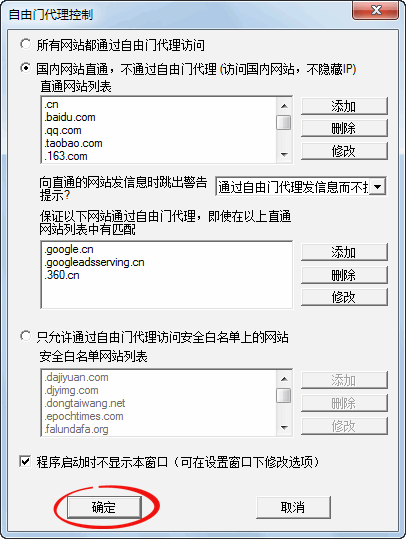
运行成功后，软件会自动打开动态网的主页，切换到软件的服务器选项界面，可见搜索到的服务器及流量图：

退出自由门：在自由门界面上点击退出，这时会弹出提示界面，如图设置，并点击关闭应用程序即可。
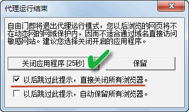
使用要点四:自由门无法翻墙怎么办
1、切换翻墙通道。
自由门提供F和A通道，默认使用A通道；点击面板上通道选项，点选F通道；
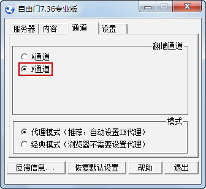
软件会提示重启自由门生效，确认即可。
2、使用旧版本自由门翻墙
封锁严重时，往往会针对最新的自由门版本，这时可以选用以前的旧版本自由门软件，多试几个版本，可能会有奇效；
翻墙访问：http://dongtaiwang.com/loc/fg.php
历年自由门版本大集合，这里有旧版本的自由门软件，封锁严重时，有些旧版本软件反而好用，可以尝试一下；有些版本可能要安装封包过滤器：
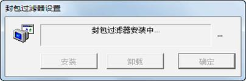
3、使用自由门+代理的方式突破封锁，详见教程《异次元代理教程》内容；
4、等待自由门新版本推出
软件简介:
动网通是动态网系列软件之一，数字签名验证和自由门一样，介绍略。功能和使用方法以下仅作简介。
软件下载：
翻墙后下载：http://dongtaiwang.com/loc/software/dp/32/DynaPass32.exe
或 http://dongtaiwang.com/loc/software/dp/32/DynaPass32.zip
使用要点一：双击软件图标,运行动网通
如果是第一次使用自由门，双击软件图标后，会弹出一个通道与代理选择的页面，新手可以直接点确定，这里的选项供熟悉代理的用户使用。
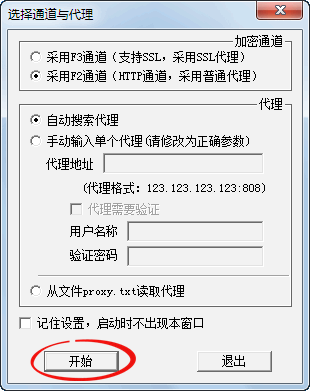
进入动网通界面后，如果找到服务器，就会自动打开动态网主页，图略。
使用要点二：动网通软件界面说明
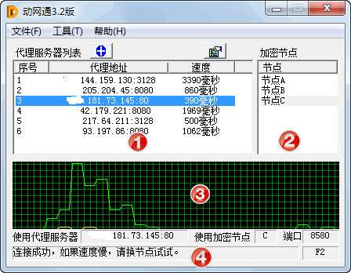
以下分四个区说明：
①代理服务器列表：列表显示的是软件自动搜索到的可用代理，可以鼠标点选一个最快的代理，图示中选择的是181.73.145：80代理；
②加密节点区：这里显示的是软件自动搜索到的动态网节点，可以鼠标点选切换，这里选择的是节点C；
③网络流量区：这里显示的是通过动网通软件的网络流量，图中绿色曲线表示浏览/下载量；
④软件状态区：这里显示的是前述的设置状态，比如前面设置的代理、节点等等；注意：如果动网通连接成功，这里会出现连接成功，如果。。。等提示字样。
使用要点三：动网通无法翻墙怎么办
方法1、切换软件的翻墙通道；动网通3.2版提供F2和F3两个翻墙通道，默认使用F2通道；其中一个通道不灵的时候，可以切换另一个通道来翻墙。在打开软件时的通道与代理选择的页面，就可以切换加密通道。如图：切换至F3通道再试试翻墙即可。（一般情况下，默认的F2通道翻墙能力比较强）
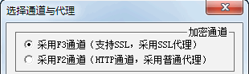
也可以在动网通界面点击工具→→设置，设置F2/F3通道。
注：F2通道不支持https链接，F3通道支持https链接。所以，访问Gmail 邮箱等这类https链接，只能用F3通道。
方法2、如果翻墙速度慢，或找到代理服务器、节点而无法打开网页，可以按使用要点二的说明切换不同代理服务器或节点服务器；
方法3、使用其它代理+动网通翻墙；动网通本身能自动搜索代理服务器，在某些情况下也可以使用自行搜索的有效代理配合动网通翻墙。在通道与代理选择的页面，勾选手动输入代理，即可输入自选的代理。此功能仅限对代理有一定了解的用户，故过程略。
软件简介
总部位于世界高科技中心美国硅谷的无界网络公司(UltraReach Internet Corp.)创建于2002年，是由一批在高科技领域的成功的企业家、科学家和工程师们创办的。
鉴于一些国家(比如中国大陆)施行网络信息封锁和过滤，本公司作为网络自由与安全的先驱者，致力于提供技术和服务，帮助网络用户绕过信息封锁和过滤，为用户提供安全、自由上网的渠道。
保护网络用户的安全及隐私是我们的宗旨，让人人享有自由的网上资讯是我们不懈追求的目标。
使用要点一:如何下载无界软件
1、全球自由网盟论坛--无界中文技术支持区
翻墙访问：http://forums.internetfreedom.org/index.php &board=8.0
置顶贴中下载最新版;
2、无界主页
翻墙访问：http://wujieliulan.com/
主页上可以直接下载软件，包括手机版：
要点二、验证软件安全性
无界浏览新版提供数字签名，验证方法：在无界软件图标上点右键，在弹出菜单中选择属性，属性页面中依次选择数字签名→→签名列表→→详细信息→→查看证书：
此页中您应该看到以下字样:
颁发给: Ultrareach Internet Corp
颁发者: GlobalSign CodeSigning CA - G2 的字样。
如果"数字签名"页不存在，或签署者及"颁发给"不是 "Ultrareach Internet Corp."，或"颁发者"不是 "GlobalSign CodeSigning CA - G2"，可能此文件下载不完整, 或属假冒, 请立即删除此文件, 从新下载。
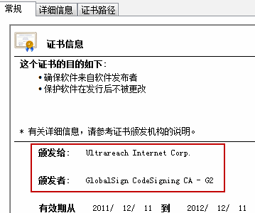
要点三:双击软件图标,运行无界浏览
成功翻墙后，软件会自动弹出无界主页（略）；同时界面上会提示连接状态：服务器连接成功：
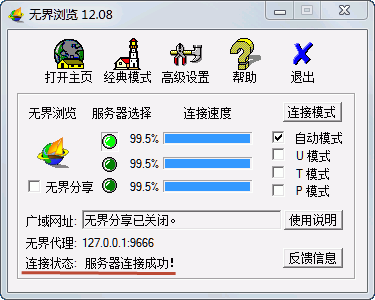
桌面上会出现无界的标志之一：大金锁，表明浏览是在无界超高加密下运行，是安全的。
使用要点四：无界浏览无法翻墙怎么办
1、切换不同的连接模式
新版无界提供多种连接模式，默认为自动选择；如果翻墙不畅，可以手动切换不同模式，重启生效：
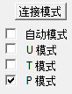
2、可以在软件面板上高级设置→→代理设置中设置代理，通过代理翻墙，过程略。
3、等待新版本升级
软件简介
花园软件（GTunnel）相比自由门和无界低调很多，但每每能在关键时刻闪光，给您以惊喜。本文介绍GTunnel 2.0.1.7版本。
使用要点一:如何下载花园软件
翻墙后直接下载：http://gardennetworks.com/download/GTunnel.zip
或者在全球自由网盟论坛--花园软件技术交流区
翻墙访问网盟花园论坛： http://forums.internetfreedom.org/index.php board=14.0 置顶贴中下载
使用要点二：如何运行软件
软件下载后是一个压缩包，需要先解压出来，如图一共三个文件，其中金黄色的GTunnel文件就是主程序文件，双击即可运行花园软件。
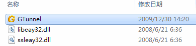
花园软件有四种不同的通道模式：标准模式、Skype模式、Gtalk模式、Tor模式。标准模式现在无法使用，但其它几种模式翻墙能力很强。以下将逐一说明。
使用要点二：如何运行Skype模式
要能够运行Skype模式，前提是有一个Skype软件及帐号，下载及注册方法见教程中《Skype帐户申请教程》内容，特别提醒不能用大陆版Skype软件，必须使用Skype原版软件翻墙。
步骤：
1、 登陆skype软件，过程略；
2、运行GTunnel软件，界面上点设置，并选择Skype模式，如下图所示：
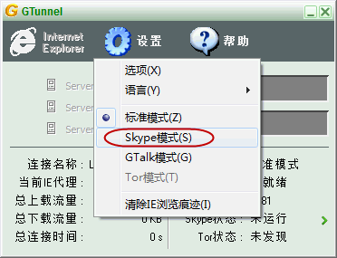
3、设置Skype软件，允许GTunnel访问。
运行GTunnel后，Skype软件右上角会弹出是否允许GTunnel使用skyep的提示，选择允许访问即可。
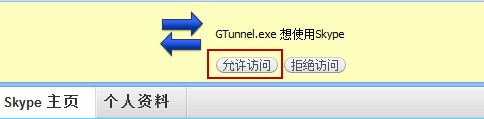
注：也可以在Skype软件菜单中的工具→→选项→→高级→→管理其它程序对skype的访问中设置。
4、设置浏览器代理并翻墙。
按以上步骤操作，稍等一会GTunnel连接成功即可翻墙；如果始终不通，可以并闭并重启GTunnel软件再次尝试。连结成功后会出现设置IE浏览器代理的提示：
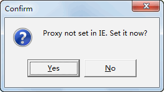
点击Yes按钮，软件会自动设置IE浏览器代理并打开花园网主页；如果不使用IE浏览器翻墙，可以点击No按钮，不打开IE浏览器，使用Firefox等第三方浏览器来打开网页，当然前提是设置好浏览器的代理（127.0.0.1：8081）。
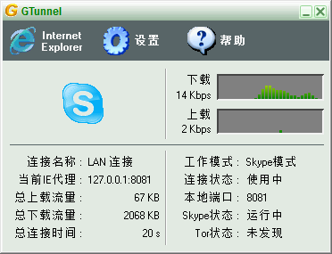
连结成功后，如上图所示，图中右侧绿色示意图表示浏览/下载的流量。
5、使用完毕，退出花园软件。
与一般软件不同，花园软件界面上的按钮只是最小化软件界面，并没有退出。退出该软件应当在桌面托盘图标上点击右键，弹出菜单中，选择退出。
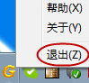
注：花园软件的托盘图标，有流量通过的时候是金黄色，没有流量通过的时候是绿色。
使用要点三：如何运行Gtalk模式
运行Gtalk模式，前提是有一个Gmail邮箱帐号，注册方法见教程《Gmail邮箱申请教程》，准备好邮箱用户名及密码。
步骤：
1、直接运行GTunnel软件， 界面上点设置，选择Gtalk模式，如下图所示：
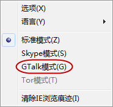
2、按提示输入Gmail邮箱用户名及密码，并点击测试。如果测试Gmail连结成功，就点击确定，开始运行Gmail模式。
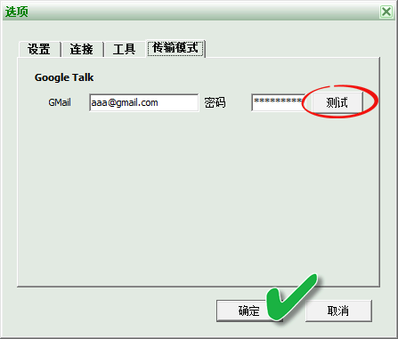
注：如果Gtalk模式不好使，测试会提示连结Gtalk服务器失败，多次尝试无效则暂时放弃这种模式。
使用要点四：如何运行Tor模式
方法同前，预先成功运行Tor软件，然后在GTunnel的设置中选择Tor模式即可。示意图：
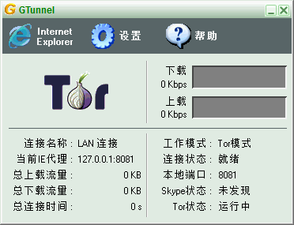
注：Tor模式意义在于，比单纯运行Tor软件更安全，可以避免Tor本身存在的一些安全隐患；比单用Tor速度更快。
软件简介
爱博电视―iPPOTV是一款在线直播软件，
使用要点一:如何下载/安装iPPOTV软件
1、用海外邮箱获取下载地址
用海外电子邮箱，如gmail或hotmail 给ippotv2011@gmail.com发一封电子邮件，邮件主题为1234。即可收到最新版本的爱博电视软件。
2、 网盟论坛下载：
翻墙访问：http://forums.internetfreedom.org/index.php &board=18.0
置顶贴中有最新版软件下载及问题反馈。
下载后是一个安装包，安装后即可收看。
使用要点二: iPPOTV软件无法接受频道列表怎么办
方法一：
用海外邮箱，给ippotv.abcd@gmail.com发一封电子邮件，主题为abcd, 10到20分钟之内，您就会收到回复。 请先关闭iPPOTV,然后 将回复中的附件（status16.ptp)复制到你的iPPOTV目录下，复盖已有的status16. ptp文件，再打开爱博电视，就能成功登陆了。注意：必须先关闭iPPOTV,然后再复制 节点文件。
方法二：
打开iPPOTV,等待3－6分钟，关闭iPPOTV再等至少5－10分钟。再打开iPPOTV,通常这样就能登陆成功了。
软件简介：
异次元代理(Hyperspace Proxy)是一个多功能代理工具，作为一款免费的绿色软件，它几乎囊括了一般代理工具的几乎所有常见功能：强大的搜索、下载代理功能，一次性下载1000多代理，代理的有效率极高，不再需要到处去网上搜寻代理了。
翻墙必备工具之一。
一、异次元代理软件下载/安装
翻墙访问软件官方主页：http://hyperspaceproxy.info/
或翻墙后直接下载：
Windows版：http://hyperspaceproxy.info/download/HpsProxy1.0.zip
纯Java版： http://hyperspaceproxy.info/download/HpsProxy1.0.java.zip
纯Java版可支持Unix、Linux、苹果Mac等操作系统平台
下载后解压即可使用， 双击HpsProxy 主程序运行软件；Vista/win7系统建议右键中以管理员权限运行；
异次元软件的运行需要Java6环境，如果本机没有安装JAVA，会自动弹出JAVA安装网页，按提示安装。或事先至
http://www.java.com/download/ 下载安装JAVA环境。
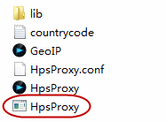
二、如何下载、校验代理
第一次运行异次元代理软件，会自动弹出IP数据库更新提示，点取消，然后来到软件主界面，首先要下载代理；
软件会自动下载代理，也可以点击软件主界面下载代理：
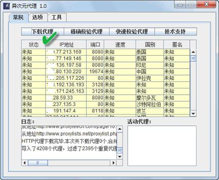
下载完成后，由于不能确定下载的代理是否能用，所以需要校验代理。异次元代理的校验功能分两种，有快速校验和精确检验。
软件主界面点击快速校验：
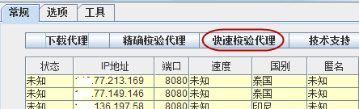
软件会弹出两次检验网址提示，一次是http开头，一次是https开头的网址。可以直接点确定，也可以手工输入能直接访问的国外网址，注意要输入网址完整格式，如http://www.inter.com这类。异次元代理软件默认校验网址为：www.google.com
例：
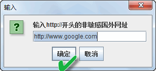
确定后，软件自动开始校验代理，需时较长，耐心等候。校验完成后，日志框中会有完成提示；
状态栏中，会出现三种状态提示：
有效-SSL 、有效、无效
有效-SSL：SSL含义参考本教程《<第二章 翻墙补充知识教程>---代理基本知识》一节，这种代理对现有翻墙软件支持较好，比较常用；
有效表示代理可用，但不支持SSL连接，对现有翻墙软件支持较少。
无效表示经过校验后，无法使用的代理，可以删除。
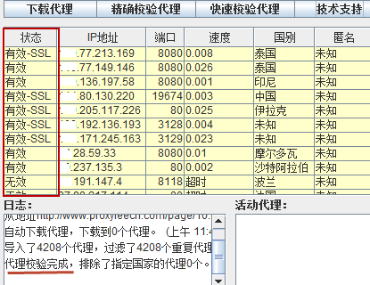
快速校验完成后，有效代理大致可用；如果要追求更精确的结果，提高翻墙效率，可以用精确校验方式再校验一次：
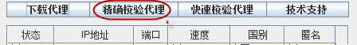
点击后，软件会两次提示输入特征字符串，一般可以用网址中的名称，如google，www.inter.com 中的inter等等。
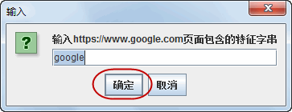
精确校验耗时更长，但结果更准确。完成后，可以删除无效代理，减少下次代理的校验时间，任选一个代理，点击右键，会弹出软件的功能菜单，选择删除无效即可删除无用代理。菜单上还有更多功能，自行试用。
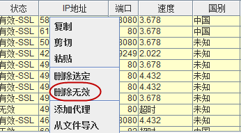
三、如何更新IP国别数据库。
前面几个图中，注意到还有中国的代理，如果其中有GFW设置的陷阱代理，对于翻墙来讲显然很不利。所以需要定期更新IP国别数据库，异次元代理会自动排除这些危险代理。
更新IP国别数据库，需要借助其它翻墙软件访问国外的IP数据库。IP数据库本身无关翻不翻墙，也被墙掉。。
以使用由门更新IP国别数据库为例，步骤：
运行异次元代理软件，在面板上点击选项，勾选用代理下载代理和更新IP国别数据库，选择自定义，并输入翻墙软件的代理端口，自由门默认是127.0.0.1：8580；
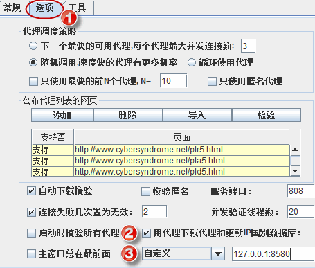
然后再成功运行自由门；
在异次元代理软件面板上点击工具，点击更新，一会就完成数据库更新。下次校验时，就会自动排除危险代理。
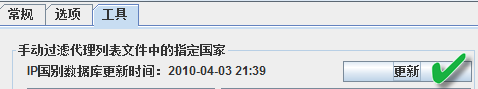
注：这里设置好了用代理下载代理和更新IP国别数据库后，下次也要启动自由门才能下载代理；或者改回原默认的异次元代理也可。
三、如何调用异次元代理中的代理
异次元代理代理提供127.0.0.1：808的本地代理端口，其它软件调用这个端口即可使用校验好的代理。异次元代理本身不能直接翻墙，是一款辅助其它翻墙软件的好工具。
以自由门调用异次元代理为例，启动自由门时，依次点击服务器---代理设置；
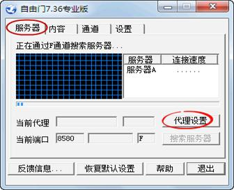
在代理设置窗口中，勾选使用以下手动设置代理+自由门，依次输入：
代理服务器：127.0.0.1
代理端口：808
最后确定即可。
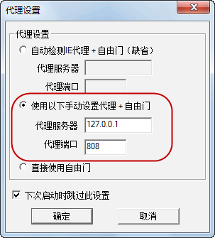
这样设置后，自由门会通过异次元代理中的代理翻墙，异次元代理软件的活动代理区，会有代理流量通过：
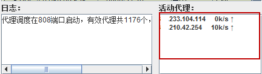
简介：
本文是针对一般网友所写。大多数人电脑中安装有很多不用的垃圾软件，包括能看到的广告软件、各种弹窗等等；还有一些意识不到的，比如操作系统中的后门、各种国产流氓软件的干扰等。如果能顺利翻墙，以下内容仅参考，否则的话，应认真考虑以下的建议。
对于安全有高安全性的人仕，有严格的操作要求，不在本文之列。
一、操作系统的选择
应当选用微软原版操作系统，尽量不要使用网络上流传的各种修改版本，这些版本制作水平参错不齐，更有甚者在系统中留有后门或装有流氓软件，难以保证系统的安全性。
系统安装完成后，上网的电脑需要更新微软的安全补丁；微软固定在每月第二周的星期二提供安全更新，要及时升级最新安全补丁。很多的木马、病毒都是利用winddows操作系统的漏洞传播。
二、安全软件的选择
首先，基本不要使用国产的安全软件，包括金山毒霸、瑞星、360、QQ管家等等，这类软件大多对翻墙软件有监控、限制功能，会导致翻墙软件不能正常运行。建议删除这类软件，最好重装操作系统；如果对安全要求不高，仅作一般性浏览，至少也要在翻墙时关闭或退出这类软件。
推荐小红伞、诺顿、卡巴斯基等国际知名安全厂商产品。小红伞（AntiVir）有个人免费版，杀毒能力强，安全性好，推荐使用。以上软件，google搜索可得。
如果翻墙软件经过安全验证，仍然有误报，那么应当在安全软件中排除。
三、翻墙软件的选择
自由门、无界、花园等经典翻墙软件，安全性好、翻墙能力强、操作简单，是翻墙的首选；Tor、I2P等软件匿名性不错，不容易被封锁，但速度较慢，可以做为备选；SSH、VPN等，可以应急使用一下，必竟很多这类服务器来源不明，如果是自已在海外空间搭建或寻找的可靠的服务器，安全还是有所保证。Goagent安全性较差，速度比较快，简单浏览应当问题不大。
四、浏览器/下载工具的选择
浏览器中不要随便安装插件，很多插件会影响系统性能，漏洞也会引发安全问题；只安装必要的代理插件，个别提供便利的插件外。国产浏览器尽量不要使用，各种插件、后门也是防不胜防。至少翻墙的时候要用原版的浏览器。
下面提供几个原版浏览器的下载地址：
1、原版的Firefox：http://www.mozilla.org/en-US/firefox/all.html
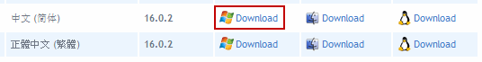
2、Google Chrome浏览器：http://www.google.com/chrome
有些翻墙软件会自动设置系统(IE)代理，但有些翻墙软件需要手动设置代理；使用非系统浏览器，如firefox（火狐）、google chrome 等，也需要设置。
翻墙时，浏览器或下载工具必须设置相应翻墙软件的代理，数据才能通过翻墙软件进出，否则是无法浏览或下载的。
一、IE浏览器的代理设置
Windows系统自带IE浏览器，各个IE版本设置方法基本相同，打开浏览器后，面板上找到工具按钮，区别只在于在浏览器的工具按钮位置不一样，找到后打开工具菜单，选择Internet 选项；以下代理设置，各个版本IE浏览器完全一样；
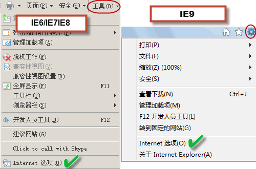
弹出菜单中，选择连接，如果是ADSL拨号连接，选择设置；如果是局域网，选择局域网设置：
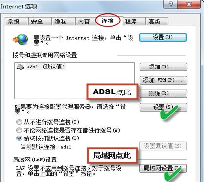
ADSL和局域网代理设置界面和方法基本相同；以设置自由门代理（127.0.0.1：8580）为例，进入设置界面，勾选对此连接使用代理设置，如图输入代理服务器址址及端口：
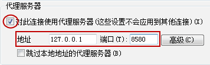
如果是局域网，设置任意代理如图：
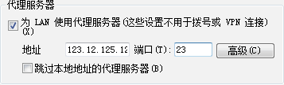
最后点击确定，完成设置。
上面是一般情况下的设置，有些特殊情况，需要在高级选项里设置，在相应章节里有说明；遇到这类情况，可以采用第三方浏览器，如Firefox（火狐）等更加方便。以下介绍这类浏览器的代理设置，及特殊情况的处理。
二、Firefox（火狐）浏览器代理设置
Firefox浏览器会自动调用系统(IE)代理设置，如果在IE中设置好了相关代理，这里就不必再设置；但在某些情况下，比如翻墙软件不能自动设置代理，可以在Firefox浏览器中设置代理。
打开Firefox浏览器，点击左上角的下拉框，在弹出菜单中选择两次选项：
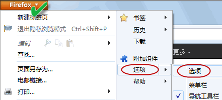
在弹出菜单中，依次点击高级→→网络→→设置：
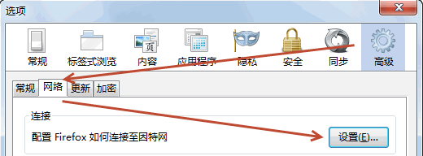
在连接设置中,勾选手动配置代理，输入例如自由门的默认代理127.0.0.1：8580，这样启动自由门后，就可以用Firefox浏览器浏览网页；
为安全起见，把为所有协议使用相同代理也勾上。
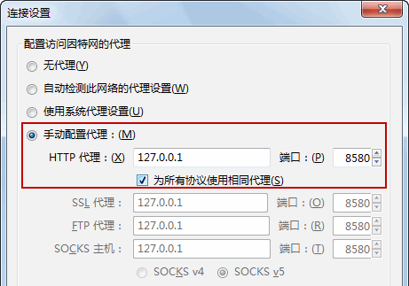
最后点击确定，完成设置。
*************************************************************************************************
上面是一般情况下的代理设置，有些情况要设置SOCKS代理，则不勾选为所有协议使用相同代理，手工输入代理；
以使用Tor 软件包为例，Tor Vidalia版 提供两种代理端口，HTTP/HTTPS的127.0.0.1：8118代理，SOCKS的127.0.0.1：9050代理，浏览器中设置任意一种即可：
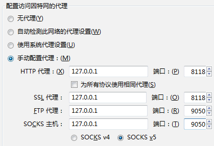
三、Google Chrome和Safari浏览器的代理设置
两款浏览器的Windows版均自动调用IE浏览器的代理设置，设置好IE浏览器即可，所以不需要另行设置。
四、Firefox（火狐）浏览器代理插件安装说明
火狐浏览器代理插件众多，这里推荐Autoproxy插件，调用代理更方便，不用每次再设置；方法：打开Firefox浏览器，点击左上角的下拉框，在弹出菜单中选择附加组件，打开后输入autoproxy 关键字搜索并安装这个插件，按提示重启浏览即可；
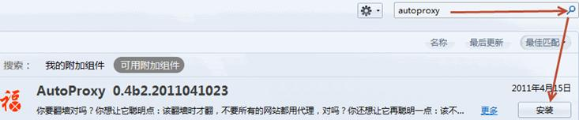
设置代理：安装后，浏览器右侧会出现福字的插件图标；点击图标上的下拉框，在弹出菜单中，选择全局模式；这样操作，所有通过火狐浏览器的数据都要经过设定的代理，安全性更好。（如果选择默认的自动模式，存在安全隐患，有些网站不知是否被墙，不一定在插件的内置列表上）
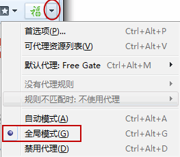
由于Autoproxy插件内置众多翻墙软件代理设置，选择其中需要的即可。例如，选择自由门代理： 上图中，选择默认代理，继续选择Free Gate，即选择自由门代理。插件图标变绿，火狐浏览器中输入网址，就是通过自由门软件翻墙浏览了。当然，事先要成功运行自由门软件哦。
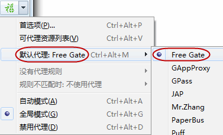
增加代理设置：可以在这个插件中增加一些没有的代理设置，比如增加Goagent 的127.0.0.1：8087代理。在上图中点击首选项，弹出菜单中选择代理服务器→→编辑代理服务器
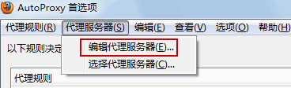
弹出编辑代理服务器窗口，点击添加代理，填写方法：
名字：goa
代理主机：127.0.0.1
端口：8087
代理类型：Goagent提供的是http代理，所以勾上http；注意有些软件提供的是socks代理。
最后点击确定，完成设置。
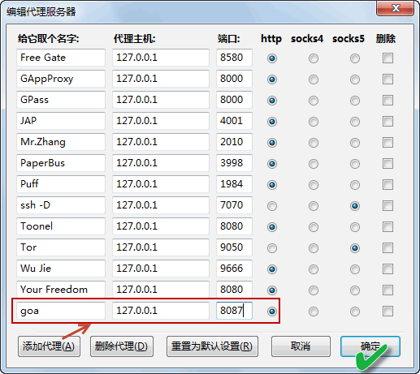
Google Chrome也支持代理插件，如Proxy Switchy，设置方法类似，自行查看。
五、FDM软件的代理设置
Free Download Manager是一款下载软件，简称FDM，安全性好，适合翻墙下载东西；如何翻墙时浏览器要设置代理一样，FDM翻墙也要设置代理才能下载。
FDM默认自动从IE获取代理设置。如使用自由门、无界等会自动设置IE代理，FDM软件就不需要手工设置代理；
如果使用Firefox（火狐）浏览器翻墙，可以选第二项从Firefox里自动获取代理设置，即可；
如果要追求安全性，或使用其它浏览器翻墙，也可以手动设置FDM代理；FDM代理设置方法：依次点击软件面板上的选项→→设定→→新建下载项→→高级操作→→代理服务器；
以设置自由门代理为例，点击手工指定选项，在协议中选择HTTP，然后在地址和端口中填入自由门默认代理设置，如图：
；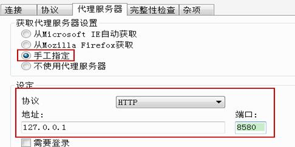
然后继续设置HTTPS和FTP的代理，一般和HTTP代理相同，最后点击确定完成设置。
这样设置后，就可以通过自由门下载了。
六、IDM软件的代理设置
Internet Download Manager也是一款下载软件，简称IDM，抢线能力强，但用在翻墙下载时，有需要特别注意的安全事项。
IDM软件可在google上搜索可得，以最新版6.12设置为例，其它版本可能略有不同，请参考此设置：
依次点击软件面板上的下载→→选项→→代理服务器，IDM不能象FDM那样默认设置IE代理，需要点击从IE获取。
如果要追求安全性，或使用其它浏览器翻墙，也可以手动设置IDM代理；以设置自由门代理为例，点击使用代理服务器选项，然后在地址和端口中填入自由门默认代理设置；
如果有特殊情况，比如HTTP和HTTPS代理设置不一样（如I2P软件），则勾选高级选项继续设置。
如果要设置SOCKS代理，如使用tor软件或SSH代理，则勾选使用Socks，填入相应的代理设置。以设置Tor的127.0.0.1:9050代理为例：
安全提示：IDM是个比较特殊的软件，安装后，从浏览器接管下载权限，在点击下载链接之前就会自动探测、下载；如果翻墙浏览时，IDM没有设置代理，就会反复连接敏感网址，会造成“触墙”，引发安全问题。
所以建议使用IDM时，软件中常设代理，专用于海外网站的下载，避免无代理时出现问题。
|
翻墙软件 |
通道/模式 |
默认代理设置 |
|
自由门（freegate） |
A/F通道 |
127.0.0.1:8580 |
|
动网通（DynaPass） |
F2/F3通道 |
127.0.0.1:8580 |
|
无界浏览（Ultrasurf） |
自动/T/U/P模式 |
127.0.0.1:9666 |
|
花园（Gtunnel） |
标准/skype/TOR/Gtalk模式 |
127.0.0.1:8081 |
|
Tor+SocksCap32+Privoxy组合包/Tor Vidalia |
HTTP代理 Socks代理 |
127.0.0.1:8118 127.0.0.1:9050 |
|
I2p |
HTTP代理 HTTPS代理 |
127.0.0.1:4444 127.0.0.1:4445 |
|
世界通（Gpass） |
标准/skype/TOR模式 |
127.0.0.1:8000 |
|
赛凤3（Psiphon 3） |
SSH/SSH+/VPN模式 |
127.0.0.1:8080 |
|
Goagent |
|
127.0.0.1:8087 |
|
SSH代理 |
SH代理软件的推荐设置 |
127.0.0.1:7070S |
|
VPN |
|
无 |
注：以上设置，为浏览器及下载工具等的代理设置。
一、代理基础知识
1、什么是代理服务器（Proxy server）？ 代理服务器是介于浏览器和Web服务器之间的一台服务器，当你通过代理服务器上网浏览时，浏览器不是直接到Web服务器去取回网页，而是向代理服务器发出请求，由代理服务器来取回浏览器所需要的信息，并传送给你的浏览器。简单的说代理就等于一个网络中转站，举个例子，A要访问B，但是A无法直接访问，代理可以直接访问B，而A又可以直接访问代理，那么通过代理中转A仍然可以访问到B。
2、谁提供免费的代理服务器
● 善良的服务器的系统管理员或能取得服务器管理权的人设置的；
● 真正好心的人，在自己的服务器设置代理，造福大众；
● 一些ISP商为了提高影响，在一段时间内开放的免费代理。通常时间很短。
二、代理的分类
Http代理：代理客户机的http访问，主要代理浏览器访问网页，它的端口一般为80、8080、3128等；
SSL代理:支持最高128位加密强度的http代理，可以作为访问加密网站的代理。加密网站是指以https://开始的网站。ssl的标准端口为443；
Socks代理：是全能代理，就像有很多跳线的转接板，它只是简单地将一端的系统连接到另外一端。支持多种协议，包括http、ftp请求及其它类型的请求。它分socks 4 和socks 5两种类型，socks 4只支持TCP协议而socks 5支持TCP/UDP协议，还支持各种身份验证机制等协议。其标准端口为1080。
其它类型略。
三、HTTP代理和HTTPS（SSL）代理的区别
1、HTTP1.1（Hypertext Transfer Protocol Vertion 1.1）超文本传输协议-版本1.1
它是用来在Internet上传送超文本的传送协议。它是运行在TCP/IP协议族之上的HTTP应用协议，它可以使浏览器更加高效，使网络传输减少。
2、HTTPS（Secure Hypertext Transfer Protocol）安全超文本传输协议
它是由Netscape开发并内置于其浏览器中，用于对数据�M行压缩和解压操作，并返回网络上传送回的结果。HTTPS实际上应用了Netscape的完全套接字层（SSL）作为HTTP应用层的子层。SSL使用40 位关键字作为RC4流加密算法，这对于商业信息的加密是合适的。HTTPS和SSL支持使用X.509数字认证，如果需要的话用户可以确认发送者是谁。
SSL代理：支持最高128位加密强度的http代理，可以作为访问加密网站的代理。加密网站是指以https://开始的网站。HTTPS（SSL）的标准端口为443，而不是象HTTP那样使用端口80来和TCP/IP�M行通信。
https:// 中的"s"非常重要，因为它告诉用户浏览器使用SSL端口。
四、如何处理使用HTTPS链接时，浏览器的弹出警报
首先要确认访问的网站是可靠的，才能勿略安全警报；
IE6/浏览器打开https://格式的网址，通常会有安全证书的确认。在弹出的两次安全警报中，分别点是“是”及“确定”就可以了。
IE9浏览器，会提示网站安全证书有问题，确认安全后，点击继续浏览即可：
Firefox浏览器，确认信任后，点击我已充分了解可能的风险→→添加例外：
在弹出窗口中，确认安全例外即可，如果还有警告窗，点确定。
Google Chrome浏览器：如图选择
推荐网站
翻墙后必须访问有料的网站，有些翻墙软件会自动弹出主页，有些则不能。现特推荐笔者常去的的几个网站，供参考。当然以下网站必须翻墙后访问。
http://www.dongtaiwang.com/ 导航主页
http://wujieliulan.com/ 导航主页
http://cn.epochtimes.com/gb 全球最大中文媒体（很意外？），准确报导中国大陆局势
http://zh-cn.shenyunperformingarts.org/ 世界第一秀，点击页面右侧的watch now，可观极精彩介绍短片
https://www.facebook.com/ 脸书，全球最大的社交网站
https://twitter.com/ 推特
http://www.qi-gong.me/ 气功网，一个神奇的网站
http://www.bannedbook.org/ 众多国内看不到的资料
Gmail邮箱申请教程
Gmail邮箱简介
Gmail是 Google 提供的电子邮件服务，最好的免费电子邮箱，翻墙必备利器之一。登陆网址：http://gmail.com
要点一：网页注册方法
不须翻墙，直接访问：https://accounts.google.com/SignUp
申请页面很简单，大多数内容任意填，不符合标准有提示。有几个注意事项：
1、选择的用户名和密码必须保存，这是登陆邮箱的帐号和密码；如下图，申请的邮箱即为abcdefg@gmail.com
2、密码为8位以上字母及数字组合；注册年龄至少80后，90后注册不能。
3、如果没有特殊要求，以下内容可以不填（手机和邮件地址用于邮箱安全管理，一般不需要）：
4、完成填写后，在注册页面底部，必须勾选我同意接受。。。的霸王条款，然后点击下一步，运气好的话即可进入Gmail邮箱，表示注册成功。
要点二：电话验证技巧
Gmail是一个免费邮箱，目前处于开放注册状态，但也有一定限制。经验表明：对同一IP有注册限制，一般网吧、小区宽带、大企业等固定IP用户，如果按上节网页注册方法进行，可能会转入电话验证页面；相对而言，ADSL家庭用户由于是可变IP，反而容易注册成功。
如果跳转到电话验证页面，仔细分析这个网页，也会发现有一些技巧。默认验证方式是短信, 在下面填入用于验证的电话号码，格式是中国区号+手机号码。比如：+86138888888。（中国区号是0086，这里用+86表示）。
填好后点发送验证码，会自动跳转到下一个验证页面。一般手机会在几分钟内收到Google发送的验证码，由6位数字组成，填好后，点击验证即可。完成后会自动跳转到邮箱登陆页面。
在有些特殊情况下，如：手机无法收到短信，没有手机或不愿意使用手机。那也有办法解决，在验证方式中，选择语音电话，输入手机号码或座机号码均可完成验证。注意手机格式同短信方式，座机格式是中国区号+城市区号+座机号，如+8601088888888这类即可，86是中国区号，010是城市区号（北京），88888888是座机号。这次是Google公司的美女客服打电话告诉你验证码哦。（图略）
要点三：在进入Gmail邮箱的过程中，如果有手机和邮箱验证的页面，跳过即可，不影响Gmail邮箱的使用；一个电话号码验证的邮箱个数有限制。
使用要点一: 申请Google App Engine账号创建权限
创建Google App Engine账号，事先必须申请一个Gmail邮箱（方法见前《Gmail邮箱申请教程》）。
然后用Gmail邮箱帐号登陆 http://appengine.google.com/
弹出创建页面：
方法一：用电话申请Google App Engine账号
点击Creat Application，这里要注意了：如果Gmail邮箱以前没有用电话验证注册，那么这里会弹出电话验证的网页，验证方法同申请Gmail完全一样，可以用座机或手机验证，再进入App Engine申请页面。这种方法好处是比较方便、快捷，过程略。
方法二：网页申请Google App Engine账号
有些情况下，不便于用电话或无法收到短信，那么也可以用网页申请。
步骤：打开http://appengine.google.com/waitlist/sms_issues，这里弹出的是登陆网页；然后用你要申请App Engine帐号的Gmail邮箱登陆，就会来到人工申请页面：
填写方法：Country（国家）、Carrier Name（姓名）随便填(因为是人工申核，要有合理性)；
重点在于Comments(原因说明)，将以下文字复制到方框中即可：
My mobile phone can't receive goagent application SMS verification code！Request to send the code to the E-mail ：xxxxxxxxx@gmail.com。
其中： xxxxxxxxx@gmail.com 更换成你申请App Engine的真实Gmail邮箱即可。
填写完成后，填写完成后，点击Submit即可发送申请到google审核，一般三、四天收到回复后，就可以开始创建App Engine账号了。
使用要点二: 创建Google App Engine账号
完成上述验证步骤后，登陆：http://appengine.google.com/，点击Creat Application（见要点一）。即来到创建App Engine页面。
创建步骤：在APPlication identifier的方框中，输入应用的名称，注意这里的限制是6--30位字母与数字的组合，位数不对是不能创建成功的；
任意输入想要的名称后，点击Chenk Availability校验是否有效用户名，如果被人占用，会出现Sorry…字样，表明该用户名无效，需要重新选择。
重新输入校验后，出现Yes…字样表明为可用的用户名；然后在Application Title中输入任意标题，不需要校验，不过要注意必须是4--30位字母或数字
页面中其它内容不必填写。最后，勾选页面底部的I accept ….，接受各种协议条款，然后点击Creat Application按钮，完成创建一个Appid。
网页会自动跳转，如下图表示创建成功，否则要退回重填；
点击左上角Google app engine图标， 或再次登陆http://appengine.google.com/，即来到app engine应用界面：
界面中可见创建的用户名及标题；
一个Gmail邮箱最多可以创建10个Google App Engine应用，每个一天1GB流量。如果1GB流量不够用，那么就再创建9个，一天总共流量达到10GB，每天16点清空。
下图中点击Creat Application按钮，回到创建页面，过程同上，不再赘述。
创建全部10个应用后，如图：
注：最好将以上用户名(appid)如abcdefghj1存入记事本，以后将会用到这些内容。
简介：微软Outlook邮箱是微软新推出的邮箱服务，用来取代原有的Hotmail邮箱。
使用要点一：网页注册
注册及登陆网址：www.outlook.com
如果没有Outlook邮箱帐户，就新注册一个；注册方法大致和Gmail邮箱相同，好处在于不需要手机验证，比较方便。
注册过程中，个人信息不需要填写真实姓名及年龄；密码安全这里，至少要填两种方法，输入符合格式的内容即可。
其它内容按提示输入，即完成注册并进入邮箱。
Skype公司出品的Skype软件是一款即时通信软件（类似于国内的QQ软件），也在翻墙事业中大有用处，但必须是老美公司出产的原版软件才派得上用场，国内TOM版Skype可能有后门，不要使用，卸载之。
要点一：下载并安装原版Skype软件
下载地址：http://download.skype.com/SkypeSetupFull.exe
如有必要，上述地址可翻墙后下载，安装很简单，勿需多言。
要点二：注册Skype帐户
软件安装完成后，会自动弹出登陆面板,点击面板上的创建新帐户，进入创建帐户页面。这个过程中可能打开国内TOM版主页，关掉即可。或直接打开注册页面：https://login.skype.com/account/signup-form
注册过程可参考Gmail注册过程，不同的是Skype注册可以只填带*的项目；
email 地址不必输入真实地址，格式正确即可，如aa@bb.com这类；
个人资料这栏不必填写，如果这个帐号用于翻墙，国籍建议不要选择中国，选择其它国家；
Skype帐号就是你使用的用户名，这里输入6-32位的字母或数字组合，如aaabbb12，系统同时会给出几个建议的用户名供选择，可以点选系统建议的用户名，保证不重复；
然后输入两次密码，系统会提示密码强度。
<![if !vml]><![endif]>
注意：现在要保存这里选择的用户名及密码，注册完成后这个页面会自动消失。
整个注册过程中，内容填写错误会有提示，填写完成后，点击页面下部我同意按钮即完成注册。
<![if !vml]><![endif]>
要点三：登陆Skype帐户
Skype软件6.0版本以后，除了上面方法注册的skype帐号可以登陆以后，还可以用已有的微软hotmail、outlook邮箱帐号以及Facebook帐号登陆，更加方便。
注：注册的skype帐号在左侧登陆；如果用微软件邮箱或Facebook帐户登陆，则应在右侧点击相应选项，软件会弹出新的登陆界面，输入已有的邮箱用户名及密码再登陆。
软件简介
I2P网络是由I2P路由器以大蒜路由方式组成的表层网络，建立于其上的应用程序可以安全匿名的相互通信。是开源的自由软件
使用要点一:如何下载/安装I2P软件
I2P是一个基于JAVA的翻墙软件，所以首先要下载安装JAVA程序才能正常运行；
JAVA下载安装器：http://java.com/zh_CN/download/windows_xpi.jsp locale=zh_CN
打开网页下载后，运行安装程序会自动下载/安装JAVA程序，过程略。安装后，最好是在开机启动项中，把JAVA的启动项取消掉。
I2P中文主页，翻墙访问：http://www.i2p2.de/index_zh.html
软件下载页面，翻墙访问：http://www.i2p2.de/download_zh.html
如图示：下载windows版的I2P，下面是其它操作系统的版本，最新版本号为0.9.3。点击链接即可下载。
软件下载完成后开始安装。注意：安装开始要选择中文
安装过程中，一路点击下一步即完成安装，过程略。
使用要点二：如何运行I2P软件翻墙
安装完成后，如果没有桌面图标，可以在系统开始菜单中寻找I2P程序，并运行Start I2P (no window)这个快捷方式，
运行后，会自动弹出I2P软件的控制台，并自动寻找服务器节点。与一般翻墙软件不同的是，I2P控制台是在浏览器打开的页面(Web 界面)：http://127.0.0.1:7657/
如图：

出现网络：隐身或正常等提示，寻找到多个节点服务器后，即可以翻墙。找到的节点个数越多，越容易翻翻墙，速度越快；
软件寻找节点的时间可能会比较长，需耐心等待；长期使用这个软件，会比较容易连上节点。
上图中点击本地服务，查看节点情况，节点处有多个节点，表明网络已连通；带宽表明网络流量。
使用完成后，在上图中点击关闭，即可关闭软件。
注：使用HTTP方式打开网页，需在浏览器中设置127.0.0.1：4444代理；
使用HTTPS方式打开网页，需在浏览器中设置127.0.0.1：4445代理，与其它翻墙软件有所区别。
IE浏览器中代理设置，注意要把HTTP/HTTPS两个代理同时设上，IE浏览器中，Internert 选项→→连接→→设置（或局域网设置）→→勾选使用代理服务器→→高级→→代理设置界面；
火狐浏览器参照以上设置，
使用要点三：I2P无法翻墙怎么办
I2P从原理上讲，不容易被封锁。但长期不用的话，种子太少，也不容易连接上，所以经常使用I2P也有助于突破封锁。如果实在连不上，也有办法：
通过代理补种
打开I2P 的补种界面：http://127.0.0.1:7657/configreseed
添加代理，让 I2P利用其它翻墙软件补充种子；以自由门代理为例，默认代理设置为127.0.0.1：8580，如图设置即可：
注意补完种后取消代理。也可以用其它代理软件，如异次元代理等补种。
软件简介
Tor的全称是 “The Onion Router”， 号称是“An anonymous Internet communication system”， 它本身是ssl加密的。
它是针对现阶段大量存在的流量过滤、嗅探分析等工具，在JAP之类软件基础上改�M的，支持Socks5，并且支持动态代理链（通过Tor访问一个地址时，所经过的节点在Tor节点群中随机挑选，动态变化，由于兼顾速度与安全性，节点数目通常为2-5个），因此难于追踪，有效地保证了安全性。
本节讲述Tor Vidalia 版内容。Vidalia版表示一个集成了tor、polipo、firefox的图形界面版。
使用要点一:如何下载TOR软件
1、 用海外邮箱获取下载地址
以接受windows中文版软件包为例，发送内容为windows的邮件到Tor官方邮箱：gettor+zh@torproject.org
一会收到Tor的回复邮件，页面底部的邮件附件中下载Tor软件包：
2、 Tor官网下载：
翻墙后访问：https://www.torproject.org/
下载网页：https://www.torproject.org/download/download-easy.html.en
下载页面注意改为中文版（简体字）就可以开始下载了：
使用要点二: 如何运行TOR软件
下载的软件包是一个压缩文件，双击即解压到Tor Browser文件夹中，运行其中的Start Tor Browser文件，tor会自动联网并搜索节点。
弹出Vidalia控制面板：
上图中表示Tor正在连接服务器，连结成功后，状态栏会出现绿色洋葱头，并提示Tor 网络已连接；
同时，会弹出软件自带的Firfox浏览器，测试是否成功连结tor网络，出现Congratulations。。。等字样，表示通过tor网络翻墙成功，就可以自由上网了。关掉这个Firfox浏览器，也会同时关闭Tor Vidalia软件。
如下图：网页同时会显示你访问该网站的IP地址，通常不是你本机的IP地址，表明使用tor软件是能够隐藏IP地址，安全访问的。（隐藏IP地址的问题比较复杂，这里仅简述）
如果不希望使用这个浏览器，那么依次进入文件夹Tor Browser→→Data→→Vidalia，然后双击打开vidalia.conf文件，
在打开提示里，选择从已安装程序列表中选择程序：
选择记事本打开：
将头两行的配置：
BrowserDirectory=…\FirefoxPortable
BrowserExecutable=tbb-firefox.exe
修改置空即可：
BrowserDirectory=
BrowserExecutable=
如图：
Tor Vidalia版 提供两种代理端口，HTTP/HTTPS的127.0.0.1：8118代理，SOCKS的127.0.0.1：9050代理，浏览器中设置任意一种即可。设置详见本教程第二章《浏览器/下载工具代理设置》一节，此处不再重复。
.
使用要点三: TOR软件不能翻墙怎么办
如果一直连不上服务器，也就是翻不了墙，那也有办法：
1、下载最新版本；
2、使用代理帮助连接Tor网络。
Vidalia控制面板上点击设定，
在弹出界面中，选择网络，勾选我使用代理服务器连接到网络，然后填入代理服务器的地址、端口、类型；以使用自由门代理为例，默认代理设置为127.0.0.1:8580。如下图填写后，启动自由门， tor软件即通过代理连结服务器。
也可以用SSH代理等连结，效果不错，也增加了安全性。SSH代理与前面不同，提供的是socks代理：
注意代理类型选择SOCK 5；
注：代理类型一栏，常用的翻墙软件都提供HTTP代理，所以选择HTTP/HTTPS一栏；如果是自找的其它代理，根据实际类型选择。
3、使用网桥连接Tor网络
①翻墙访问：https://bridges.torproject.org/
输入图示的验证码，然后点 I am a human 按钮，会出现类似以下内容,其中bridge后面跟的是网桥的ip地址和端口：
Here are your bridge relays:
bridge 111.11.1.1:443
bridge 112.22.2.2:44345
bridge 113:33.3.3:443
然后在Vidalia控制面板的代理设置页面（前图），勾选我的ISP阻挡了对Tor网络的连接，将网桥完整复制到方框中以后，按 + 号添加到软件中即可，如图操作：
完成操作以后，Tor软件即通过网桥连网。
②通过email获取网桥
注意发信邮箱至少要https登录，或者使用翻墙软件登录。
tor只接受Gmail、Yahoo的邮箱。注意不把自己的bridge告诉别人，不同的邮箱可能得到不同的网桥，而且短时间内不会得到新网桥，这就防止了邪恶枚举网桥。告诉别人可能增加被封的风险, 而邮箱短时间内却可能得不到新网桥。
方法是给 bridges@torproject.org 发邮件，邮件正文为 get bridges。当您发送邮件后，几乎立即可以收到回信，回信包含如下信息：
Here are your bridge relays:
bridge 111.11.1.1:443 c9111bd74a710c0d25dda6b35e181f1aa7911133
bridge 112.22.2.2:44345 c18dde4804e8fcb48464341ca1375eb130453a39
bridge 113:33.3.3:443 ab5c849ed5896d53052e43966ee9aba2ff92fb82
第一部分是 IP 地址：'111.11.1.1'
第二部分是端口：'443'
第三部分是指纹（可选）： 'c9111bd74a710c0d25dda6b35e181f1aa7911133'
③获取IPV6网桥
在https://bridges.torproject.org/ 页面底部提供IPV6网桥：
点击链接即可，IPV6网桥格式略有不同，但以下操作同方法①完全相同，过程略。本方法前提是本机能用IPV6上网，国内大部份地区不具备此条件。
软件说明
Goagent是使用Python编写的翻墙软件，按官方说明支持多操作系统，可以运行在Windows/Mac/Linux/Android/iTouch/iPhone/iPad/webOS/OpenWRT/Maemo上。
Goagent翻墙速度比较快,但是以牺牲安全性为代价，Goagent加密性及匿名性先天不足；一般性浏览问题不大，或临时下载经典翻墙软件。如果需要做重要事，如翻墙发贴、发表文章等，不要使用Goagent。
使用要点一:如何下载Goagent软件
翻墙访问：https://code.google.com/p/goagent/
软件更新很快，如果老版本被墙不能使用，需下载最新版。下载后是一个压缩包，解压后就可以配置文件开始翻墙。当然，google的东西离不开gmail，所以事先要申请一个gmail邮箱；同时，还要申请创建Google App Engine账号，才能使用Goagent翻墙。
申请创建Google App Engine账号方法见本教程第二章《如何创建Google App Engine账号》。
使用要点二:配置Goagent
将下载的Goagent软件解压，这里有两个文件夹，local和server。以下会先后用到这这两个文件夹中的内容。如图：
首先打开local文件夹，编辑其中的proxy.ini文件，注意其中有几个proxy文件，选择可以直接打开的文本文件（图标不同）。
打开文件后，修改appid = goagent 这一行，将goagent替换为你申请的上述appid即可；如果是多个appid，则用 | 分隔；
替换后

保存退出即可。
退回并打开server文件夹，运行uploader文件，弹出一个命令行窗口，将上图中的appid用鼠标粘贴到此，并回车执行。
回车后图中会要求输入 Gmail邮箱地址，输入后回车，然后继续输入Gmail邮箱登陆密码，回车。

软件会自动开始上传程序，添加的appid越多，时间可能越长，窗口滚动停止后，即完成Goagentl软件部署。
如图：abcdefghj3 表示最后一个上传的appid，succeeded表示成功上传。如果不是如图所示，可能需要重新上传。
完成上传任务以后，以下可以开始翻墙。
使用要点五:运行Goagent
完成以上安装后，关掉所有窗口。回到local文件夹，运行Goagent程序：
WIN7下，建议以管理员权限运行，Goagent程序上点击右键，选择以管理员身份运行
Goagent软件会弹出一个命令行窗口，如图，表示Goagent软件正确配置并运行：
退出Goagent，关闭命令行窗口即可； Goagent软件默认代理设置127.0.0.1：8087，浏览器中设置此代理翻墙。
使用要点六: Goagent不能翻墙怎么办
无它，下载新版本Goagent软件即可。注意：版本更新最好重新上传程序。
简介：
SSH 是 Secure Shell （安全外壳）的缩写，是目前较可靠网络安全性协议；SSH 本身是一种加密渠道，本身并不能翻墙，需要结合代理服务器才能够翻墙。SSH 代理可以看作加密的代理，比较安全；SSH代理另一项优点为其传输的数据是经过压缩的，所以可以加快传输的速度。
一、如何找到SSH代理
代理有免费和收费两种，SSH代理也不例外；要找到SSH代理，当然拿出google这个法宝，关键字如：免费 SSH、收费 SSH 等等。
SSH代理商通常会提供SSH代理的域名或IP地址，以及SSH代理的用户名、密码。一般SSH代理都会有使用时间限制，定期更换密码。
二、如何使用SSH代理
找到SSH代理后，还要下载一个SSH代理软件才能使用这个代理，推荐Bitvise Tunnelier；英文界面，按图操作，很容易设置。
其它客户端，如myentunnel等，也可以使用。
翻墙访问Bitvise Tunnelier官网：http://www.bitvise.com/tunnelier
下载完成后，双击运行安装包，弹出界面中，勾选I agree to…..选项，然后点击Install，软件会自动完成安装。
软件安装完成后，会自动弹出设置界面；事先准备好SSH代理，只需几个步骤即可翻墙。
1、点击软件界面上Options选项，在On Login 中的三个选项均取消勾选：
2、点击软件界面上Services选项，勾选Enabled选项，在Listen Port 中输入7070；这里是设置软件的代理端口，可以自行设定，为避免与其它软件端口冲突，SSH代理软件建议统一设置为127.0.0.1：7070，便于识别；
3、点击软件界面上Login选项，这里填写SSH代理提供的资料：
①Host：SSH代理的主机域名或IP址；
②Port：SSH代理的端口，一般默认是22，也有443或其它端口，根据资料填写；
③Username：用户名，根据资料填写
④Initial meth：下拉框中选择password（密码）
⑤Password：输入代理商提供的SSH代理登陆密码
填完后，猛击底部Login，登陆代理；连接后，会弹出一个提示窗口，选第一个保存密码即可：
界面中的滚动框中出现succeeded字样，表示连接代理成功。在浏览器中输入127.0.0.1：7070的socks 5代理即可翻墙。
注：SOCKS代理与一般的代理不同。浏览器与下载工具中的设置均有不同。详见本教程《浏览器与下载工具代理设置》一节。
Firefox设置SSH代理为例，勾选手动配置代理，主机中输入127.0.0.1，端口输入：7070，勾选SOCKS v5，
Firefox也可以使用系统代理设置（IE代理设置），前提是设置好IE代理，Firefox、Google Chrome浏览器自动调用这个设置。
IE浏览器中，Internert 选项→→连接→→设置（或局域网设置）→→勾选使用代理服务器→→高级→→代理设置界面；
套接字即为SOCKS代理，以下设置同前；
下载工具要选用支持SOCKS代理的软件。
简介：
赛风是由多伦多大学的公民实验室（Citizen Lab）推出的翻墙软件，一个软件同时提供VPN、SSH\SSH+代理用于翻墙。
使用要点一:如何下载赛凤软件
赛凤官网（翻墙访问）：psiphon3.com
或者也可以用海外邮箱给get@psiphon3.com 发送任意邮件，邮件可能收到多个回复，选择其中有附件的打开。正文中会提供两个版本的附件，一个是windows版，另一个是安卓手机版，选择需要的附件下载。
注：windows版下载以后，需将文件后缀名改为.exe才可以运行。图中为psiphon3.ex_，改为psiphon3.exe即可。
邮件中提供下载链接，选择中文的下载链接下载。
使用要点二：验证及运行赛凤软件
赛凤软件自带数字签名，验证方法同自由门，赛凤3数字签名如下：
84 c5 13 5b 13 d1 53 96 7e 88 c9 13 86 0e 83 ee ef 48 8e 91
验证完毕后，就可以运行软件了，赛凤3是一个单文件版软件，无需安装，直接双击运行。
赛凤3可以自动寻找代理， 界面左侧旋转的箭头表示软件正在寻找服务器；
软件连接到服务器后，会自动弹出主页，软件同时提示连接成功，如图：
赛凤3提供三种翻墙通道：SSH+通道、VPN通道、SSH通道，软件默认首选SSH+通道；三种通道用户可自由选择，一种不好使，点选切换通道模式即可。
鉴于赛3打开的主页比较奇葩，所以还是自已输入教程中推荐的网页比较好。
注：软件界面中部建议勾上Don’t proxy ….这段，勾上后访问国内网站就不经过代理，节约一些翻墙软件服务器流量。

使用要点三：赛凤3的SSH+、VPN、SSH三种模式，如何设置浏览器及下载软件代理。
赛凤3会自动设置系统代理，所以IE浏览器不必设置代理；非IE浏览器如果自动调用系统代理设置，则不必设置代理，如Google chrome、新版Firefox等；非IE浏览器如果不是自动调用系统代理设置，则须手动设置127.0.0.1：8080代理。
下载工具代理设置：三种模式统一设置127.0.0.1：8080代理。VPN通道模式，下载工具可以不用设置代理，设置代理也是以策安全。
简介：
IPv6（Internet Protocol version 6，互联网通信协定第6版）是被指定为IPv4继任者的下一代互联网协议版本；目前的计算机网络普遍采用IPv4协议。
IPv6地址表示：
IPv6地址为128位长但通常写作8组每组四个十六进制数的形式。例如：
2001:0db8:85a3:08d3:1319:8a2e:0370:7344
一、IPV6如何翻墙
IPV6网络目前在大陆没有大规模部署，且需软硬件兼备才能上得；测试本机是否能上IPV6网络，可尝试访问：http://ipv6.google.com/
如果不能打开网页，则表明不支持IPV6网络，以下内容略过。
推荐网站：
https://[2001:49f0:a000:7:37e7:ea68:bb14:e822]
https://ipv6.epochtimes.com
二、Tor软件包借助IPV6 网桥翻墙
见Tor Vidalia教程。（略）
一、自由门手机版
翻墙访问全球网盟论坛--- http://forums.internetfreedom.org/index.php topic=17175.0
自由门安卓版：可以在安卓Android 2.1或以上的智能手机或平板电脑上使用；
自由门Java手机版.：适用于能运行Java程序的各种手机包括塞班,黑莓等机型. 并有内置的opera-mini浏览器, 方便用户使用；
自由门WM手机版：适用于Windows Mobile 2003 以上的视窗手机, 包括Windows Mobile 2003, 5, 6, 6.1, 6.5等平台的各种手机。
论坛里面有手机版安装说明，及问题解答。
二、无界手机版
无界浏览安卓（Android）手机版：http://forums.internetfreedom.org/index.php &board=8.0
除了前述教程中所讲的从软件主页、邮箱下载各种翻墙软件的方法，还有其它各种方法可以得到翻墙软件。
打开网页下载：https://code.google.com/p/emule-gifc/downloads/list
或者下载链接：http://emule-gifc.googlecode.com/files/emule-gifc-1.03b.zip
下载畅游电驴1.03版，这个版本可以自动下载翻墙软件，十分方便。 下载后是是一个压缩文件包，解压出来，并运行其中绿色图标的eMule主程序文件：
打开电驴程序后，软件自动连接kad网络，需要等候一段时间，软件右下角会有提示；
显示Kad:已连接，表示连接成功，再点击软件面板上工具菜单，在弹出菜单中选择自动下载最新GIFC翻墙软件：
软件会自动搜索翻墙软件及各种资料，选择需要的资料点右键，然后选择下载即可；
注意软件搜索到的资料很多，有各种软件、视频资料；带GIFC开头的就是翻墙软件，GIFC是网盟英文缩写。
这里的翻墙软件命名规则：
201203121：表示发布时间；
Garden：表示花园软件；
Dweb：表示自由门系列软件；
Ultra：表示无界软件；
727：表示版本号；等等
下载速度可能比较慢，点击切换到传输菜单可以查看进度：
下载完成后，在工具菜单中，点击：打开GIFC翻墙软件目录，就可以看到下载的软件和资料。以下过程略，这里下载的翻墙软件，可以按前面教程的方法校验一下再用。
注：这里可以下载以前旧版本的翻墙软件，封锁严重时,可以尝试一些旧版本自由门软件，也许能突破封锁.。
其它电驴软件可以尝试用GIFC 这类关键字搜索下载，但不要用国内的各种修改版电驴，包括Verycd版等等，这类版本是屏蔽翻墙关键字的，无法搜索下载。
Skype软件获取翻墙软件比较简单，注册方法见本教程的《Skype帐户申请教程》。
1、获取自由门软件：
登陆Skype软件，添加用户：www.dongtaiwang.com为好友。
添加方法，Skype软件面板左下角点击添加联系人，在弹出菜单中如图添加：
添加后，给好友www.dongtaiwang.com发任意消息，即可收到自由门下载地址，发送数字95获得动态网实时网址。
输入111并回车发送，即回复最新版自由门下载地址：http://123.12. 123(示意)：
点击链接打开网页，可拿到最新版的自由门、动网通下载地址；这个链接有时效性，一时打不开可刷新再试。
2、获取无界软件：
方法同上，添加无界网的Skype帐号： wujieliulan.com，给此帐号发任何讯息，便会收到无界说明及软件下载；发送数字85获得无界网实时网址。
用海外信箱给：freeman105@gmail.com 发电子邮件（标题不可空白），10分钟内会拿到最新网址，突破网络封锁，翻墙看禁闻。
一、获取动态网实时网址
1、破网IP索取信箱
给freeget.ip@gmail.com发一个电子邮件(标题不可空白)，10分钟内会收到回信，拿到几个IP。
最好用海外邮箱。
邮件可能会被当作垃圾邮件，请检查垃圾邮件文件夹确认是否已收到邮件。

注意：这类网址都有时效性，有时不容易打开，多尝试不同方法接受网址。以下同。
2、谷歌网上订阅
直接访问网页：动态网 https://goo.gl/22YRi5
3、谷歌即时通讯
如果您使用谷歌即时通讯（Google Talk）的话，可以给 dtwip4u@gmail.com 发一个即时短信，一分钟内会收到几个IP。
谷歌即时通讯 可以在 http://www.google.com/talk/intl/zh-CN/ 下载。
4、雅虎通
如果您使用雅虎通的话，可以给 fg_im01@yahoo.com 发一个即时短信，很快就会收到一个IP。
提示：10分钟内不要重复索取ip。或者可以把该帐号加为“朋友”，一上线就可以从雅虎通中看到动态网的IP。 雅虎通可以在http://hk.messenger.yahoo.com/ 下载。您得有一个雅虎的电子邮件才能用雅虎通。
5、MSN即时通讯
如果您使用MSN免费即时消息服务的话，可以用MSN免费即时消息给 zonghun385@hotmail.com 发一个短信，很快就会收到一个IP.
10分钟内不要重复索取ip。下载MSN软件地址：http://messenger.windowslive.cn/2009/
6、订阅动态网
将电子邮件输入动态网首页上的“电子邮件订阅”，点击“订阅”键，就能每一两周收到动态网技术更新，掌握最新突破网络封锁的办法。最好用海外邮箱。邮件可能会被当作垃圾邮件，请检查垃圾邮件文件夹确认是否已收到邮件。
二、获取无界网实时网址
1、电邮索取无界有效网址
给 xiazai@upup.info 发一个电子邮件(任何信息均可。为安全故，最好是用一个国外电邮帐号发)，几分钟内会收到回信，拿到几个有效IP地址.
2、视窗即时传讯索取无界有效网址
通过微软视窗即时传讯服务索取无界网有效IP地址， 请用您的微软视窗即时传讯服务器（Windows Live Messenger）给以下其中一个无界视窗传讯帐号发一个短信(任何信息均可)，一分钟内会收到几个有效IP地址：
wj2007001@hotmail.com wj2007002@hotmail.com wj2007003@hotmail.com
wj2007004@hotmail.com wj2007005@hotmail.com wj2007006@hotmail.com
注：微软邮箱注册地址：https://signup.msn.cn/
微软视窗即时传讯服务器Windows Live Messenger是微软公司Microsoft的产品，在大陆的下载地址是：
Windows 7 或 Vista版本：
http://download.msn.com.cn/messenger/2011
XP版本：
http://download.msn.com.cn/messenger/2009/
网页版：
http://download.msn.com.cn/messenger/web/
3、谷歌通话索取无界有效网址
通过谷歌通话（Google Talk）服务索取无界网有效IP地址，请在您的谷歌通话服务器给以下其中一个无界谷歌帐号发一个短信(任何信息均可)，一分钟内会收到几个有效IP地址:
wj2007001@gmail.com wj2007002@gmail.com wj2007003@gmail.com
wj2007004@gmail.com wj2007005@gmail.com wj2007006@gmail.com
注：谷歌通话服务器Google Talk是谷歌公司Google推出的一款IP电话及即时通讯的服务产品，中文版的下载地址是：http://www.google.com/talk/intl/zh-CN/
使用帮助
任何问题或建议，欢迎联系：banned.ebook@gmail.com